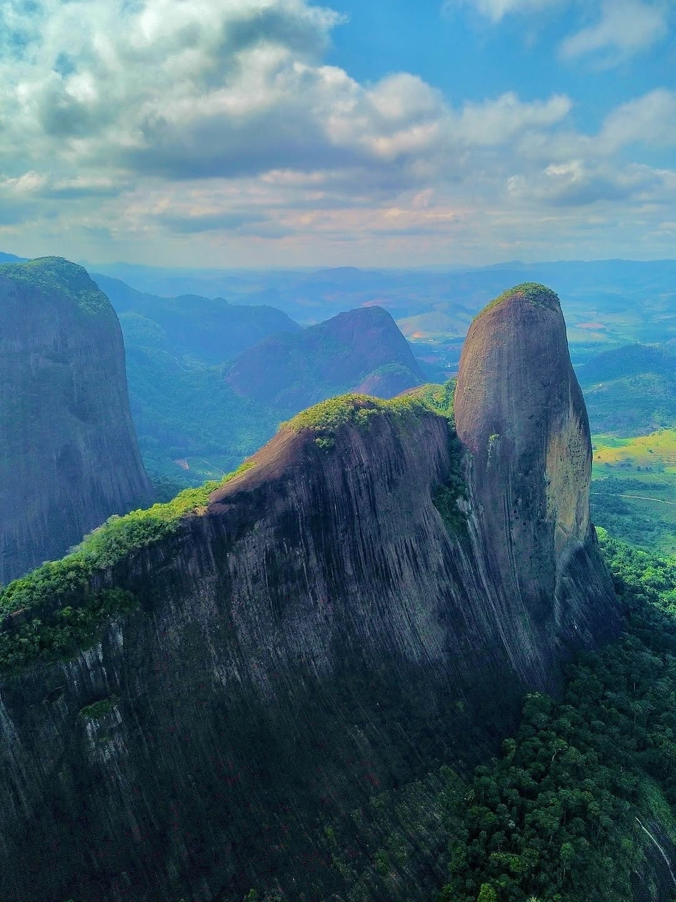

Guia Rápido
Chegou em Pancas?
Comece por aqui.
Por que Pancas?
Monumento Natural
dos Pontões
Pancas abriga um dos fenômenos geológicos mais impressionantes do Brasil: os Pontões Capixabas. Formações de granito com mais de 500 milhões de anos que se erguem até 720 metros acima do vale, criando um cenário de tirar o fôlego.
O Monumento Natural, criado em 2008, protege essas formações únicas e a rica biodiversidade da Mata Atlântica que as cerca. É o paraíso para praticantes de voo livre, trilheiros e amantes da natureza.
Lorem
Lorem
Lorem
Lorem
Lorem
Lorem
